第14章 講義ノートの図
おまけとして講義ノートで用いた図のコードをおいておく．要tidyverse．
Figure 2.1
tibble(age=c(rep(18,43),rep(19,55),rep(20,68),rep(21,21),rep(22,9),rep(23,4))) %>%
ggplot() +
geom_histogram(aes(x = age),binwidth = 1, color ="black", fill = "skyblue") +
scale_x_continuous(breaks=18:23) +
theme_classic()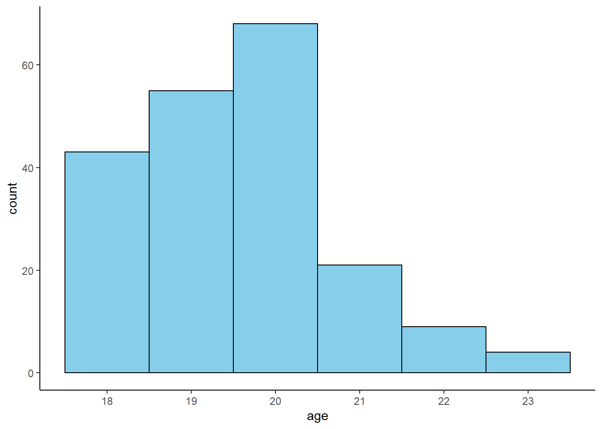
Figure 2.2
tibble(x = c(152.8,150.1,182,163.2,167.3,160.2,164.9,161.4,179.9,172.2),
y = c(56.3,52.1,85.6,66.8,74.2,58.1,61.9,55.1,70.5,64.1)) %>%
ggplot() +
geom_point(aes(x = x, y = y)) +
theme_classic()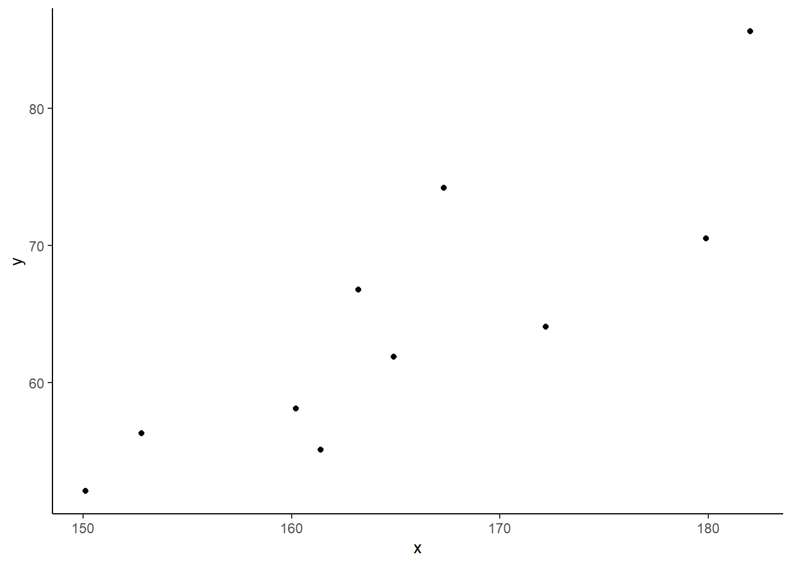
Figure 5.1
tibble(x = 1:6,
y = rep(1/6,6)) %>%
ggplot(., aes(x=x)) +
geom_linerange(aes(ymax=y), ymin=0, color="grey50") +
geom_point( aes(y=y) ) +
scale_x_continuous(breaks=1:6) +
ylab("f(x)") +
theme_classic()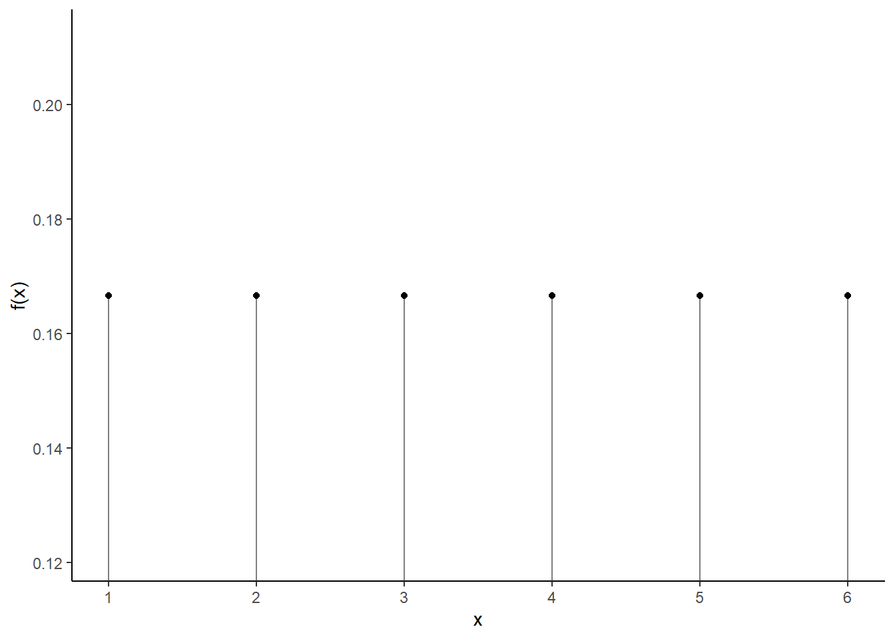
Figure 5.2
tibble(x = 2:12,
y = c(1:6,5:1)/36 ) %>%
ggplot(., aes(x=x)) +
geom_linerange(aes(ymax=y), ymin=0, color="grey50") +
geom_point( aes(y=y) ) +
scale_x_continuous(breaks=2:12) +
ylab("f(x)") +
theme_classic()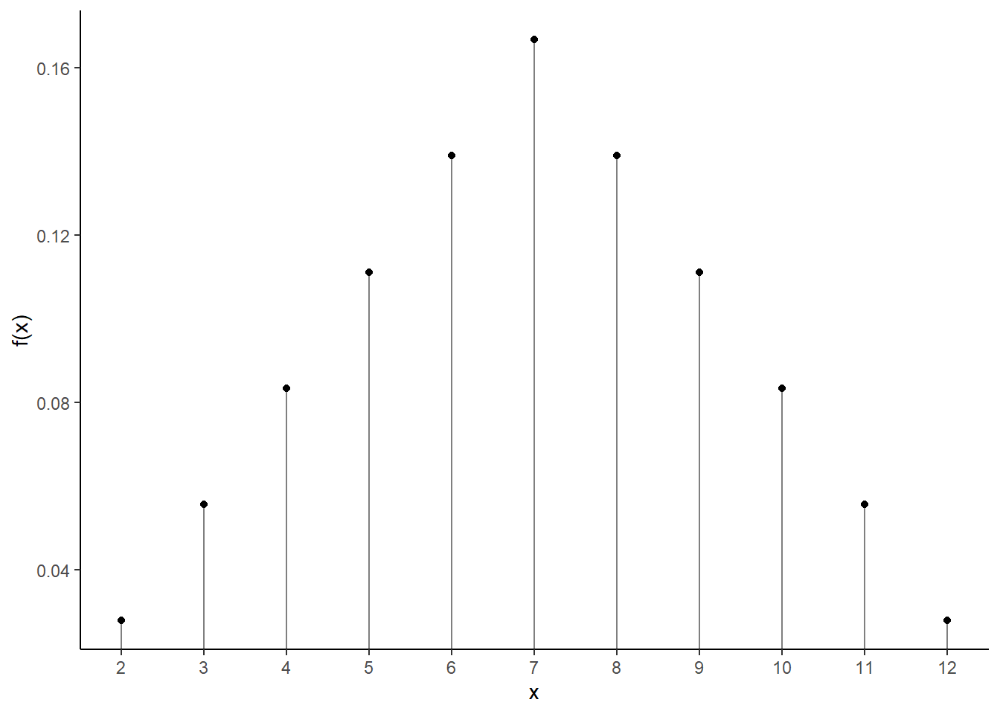 Figure 5.3
tibble(x = c(-3.5, 3.5)) %>%
ggplot(aes(x)) +
stat_function(fun = dnorm,
args = list(mean = 0,sd = 1), size = 1) +
geom_area(stat = 'function',
fun = dnorm,
fill = 'grey50',
xlim = c(-0.5, -1.5),
alpha = 0.3) +
geom_hline(yintercept = 0) +
scale_x_continuous(breaks = NULL) +
scale_y_continuous(breaks = NULL) +
annotate("segment", x=-0.5,xend=-0.5,y=dnorm(-0.5),yend=0) +
annotate("segment", x=-1.5,xend=-1.5,y=dnorm(-1.5),yend=0) +
annotate("text", x=-0.5, y=-0.02, parse=TRUE,label=paste("b")) + #italic(b)
annotate("text", x=-1.5, y=-0.02, parse=TRUE,label=paste("a")) +
annotate("text", x=-1, y=0.1, parse=TRUE,
label=paste(
"integral(f(x) * dx, a, b)")
) +
theme_void()
Figure 5.4
x <- 0:10
tibble(
x = x,
p01 = dbinom(x, length(x) - 1, 0.1),
p05 = dbinom(x, length(x) - 1, 0.5),
p07 = dbinom(x, length(x) - 1, 0.7)
) %>%
gather(key = p, value = prob, p01, p05, p07) %>%
ggplot(.,aes(x=x,y=prob,color=p, shape=p)) +
geom_point() +
geom_linerange(aes(ymax=prob), ymin=0, alpha=0.2) +
# geom_bar(stat = "identity", position = "dodge") +
scale_x_continuous(breaks = x) +
scale_fill_hue(name = "p",
labels = c(p01 = "0.1",
p05 = "0.5",
p07 = "0.7")) +
ylab("f(x)") +
theme_classic() +
theme(
legend.position = c(1, 1),
legend.justification = c("right", "top"),
legend.box.just = "right",
legend.margin = margin(6, 6, 6, 6)
)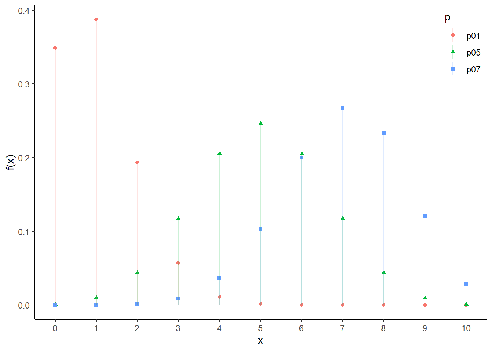
Figure 6.1
tibble(n=1:100,
se=2.92/1:100) %>%
ggplot() +
geom_line(aes(x=n,y=se), size = 1) +
labs(x="n",y=expression(sigma/n)) +
theme_classic()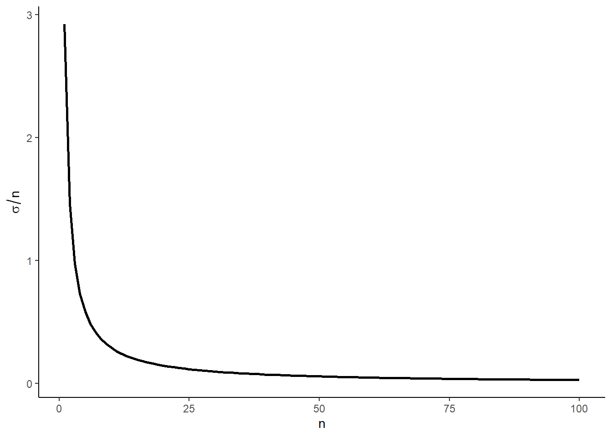
Figure 6.2
biplot <- tibble()
p <- 0.3
for (t in c(5,10,50,100)) {
tibble(
n=rep(t,t+1),
x=0:t/t,
y=t*dbinom(0:t,t,p)
) %>% bind_rows(biplot,.) -> biplot
}
biplot %>%
mutate(n = factor(n)) %>%
ggplot(aes(x=x, y=y, color = n)) +
geom_step(size = 1) +
labs(x="x/n", y="nf(x)") +
theme_classic() +
theme(
legend.position = c(0.95, 0.95),
legend.justification = c("right", "top"),
legend.box.just = "right",
legend.margin = margin(6, 6, 6, 6)
)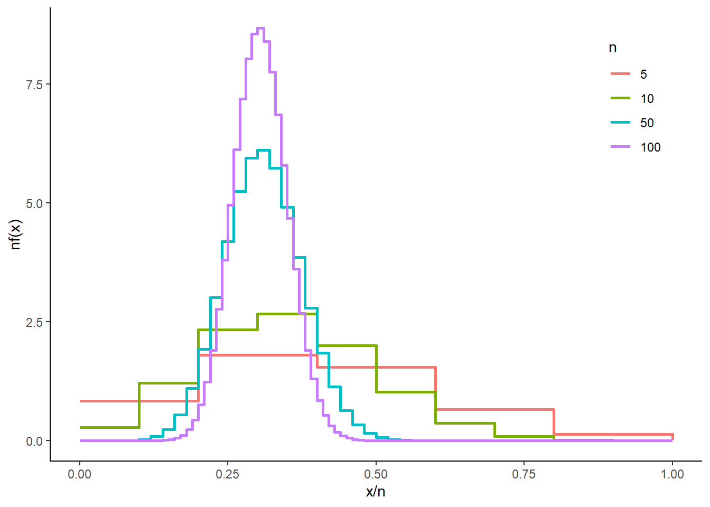
Figure 6.3
biplot <- tibble()
p <- 0.3
for (t in c(10,100,1000,10000)) {
tibble(
n=rep(t,t+1),
x=(0:t - t*p)/sqrt(t*p*(1-p)),
y=sqrt(t*p*(1-p))*dbinom(0:t,t,p)
) %>% bind_rows(biplot,.) -> biplot
}
biplot %>%
mutate(n = factor(n,labels = c("n=10^1",
"n=10^2",
"n=10^3",
"n=10^4"))
) %>%
ggplot(aes(x=x, y=y)) +
geom_step() +
xlim(c(-3,3)) +
labs(x="z", y="g(z)") +
facet_wrap(~n) +
theme_classic() +
theme(strip.background = element_blank())## Warning: Removed 6863 row(s) containing missing values (geom_path).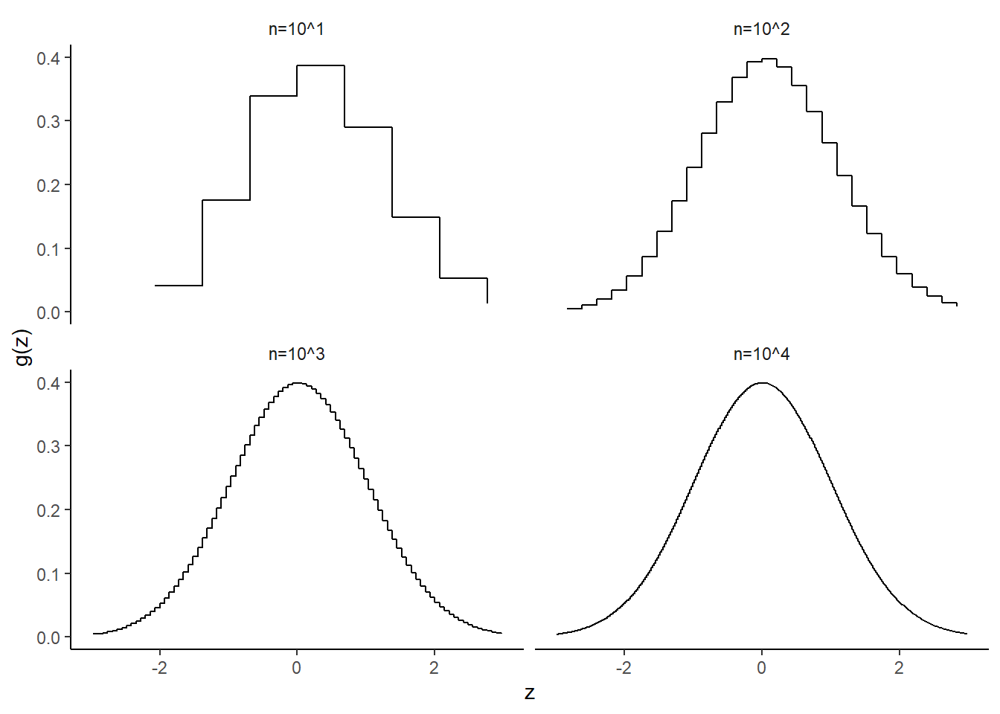
Figure 6.4
ggplot(tibble(x = c(-5, 10)), aes(x = x)) +
stat_function(fun = dnorm, args = list(0, 1),
aes(colour = "\u03bc =0, \u03c3^2 = 1"), size = 1) +
stat_function(fun = dnorm, args = list(1, 2),
aes(colour = "\u03bc =1, \u03c3^2 = 4"), size = 1) +
stat_function(fun = dnorm, args = list(2, 3),
aes(colour = "\u03bc =2, \u03c3^2 = 9"), size = 1) +
scale_x_continuous(name = "y",
breaks = seq(-5, 10, 1),
limits=c(-5, 10)) +
scale_y_continuous(name = "h(y)") +
#scale_colour_brewer(palette="Accent") +
labs(colour = "parameters") +
theme_classic() +
theme(
legend.position = c(0.95, 0.95),
legend.justification = c("right", "top"),
legend.box.just = "right",
legend.margin = margin(6, 6, 6, 6)
)## Warning: `mapping` is not used by stat_function()
## Warning: `mapping` is not used by stat_function()
## Warning: `mapping` is not used by stat_function()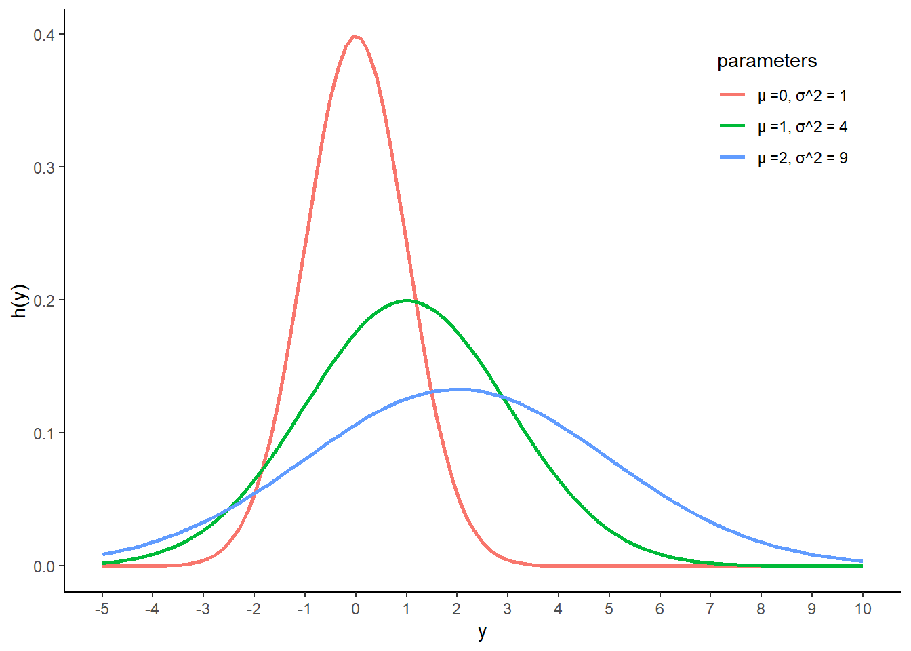
Figure 6.5
tibble(x = c(-3.5, 3.5)) %>%
ggplot(aes(x)) +
stat_function(fun = dnorm,
n = 1000,
args = list(mean = 0,sd = 1), size = 1) +
geom_area(stat = 'function',
fun = dnorm,
fill = 'grey50',
xlim = c(-1, 1),
alpha = 0.3) +
geom_hline(yintercept = 0) +
scale_x_continuous(breaks = NULL) +
scale_y_continuous(breaks = NULL) +
annotate("segment", x=-1,xend=-1,y=dnorm(-1),yend=0) +
annotate("segment", x=1,xend=1,y=dnorm(1),yend=0) +
annotate("text", x=-1, y=-0.02, parse=TRUE,label=paste("-1")) +
annotate("text", x=1, y=-0.02, parse=TRUE,label=paste("1")) +
annotate("text", x=0, y=0.1, parse=TRUE,
label=paste("integral(g(z) * dx, -1, 1)")) +
theme_void()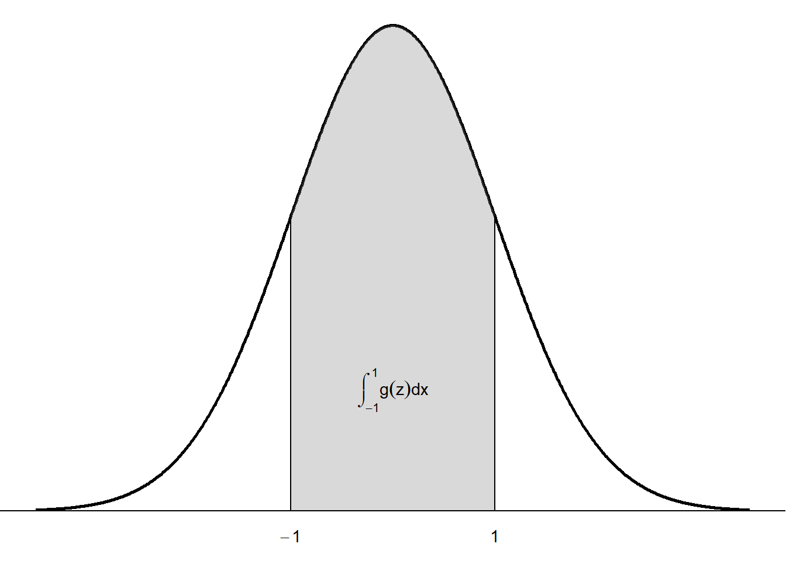
Figure 7.1
ggplot(data_frame(x = c(-5, 10)), aes(x = x)) +
stat_function(fun = dnorm, args = list(0, 1),
aes(colour = "N(0,1)"), size = 1) +
stat_function(fun = dnorm, args = list(1,2),
aes(colour = "N(1,4)"), size = 1) +
stat_function(fun = dnorm, args = list(2,3),
aes(colour = "N(2,9)"), size = 1) +
scale_x_continuous(name = "x",
breaks = seq(-4, 10, 2),
limits=c(-5, 10)) +
scale_y_continuous(name = "h(x)") +
labs(colour = "distribution") +
theme_classic() +
theme(
legend.position = c(0.95, 0.95),
legend.justification = c("right", "top"),
legend.box.just = "right",
legend.margin = margin(6, 6, 6, 6)
)## Warning: `data_frame()` is deprecated as of tibble 1.1.0.
## Please use `tibble()` instead.
## This warning is displayed once every 8 hours.
## Call `lifecycle::last_warnings()` to see where this warning was generated.## Warning: `mapping` is not used by stat_function()
## Warning: `mapping` is not used by stat_function()
## Warning: `mapping` is not used by stat_function()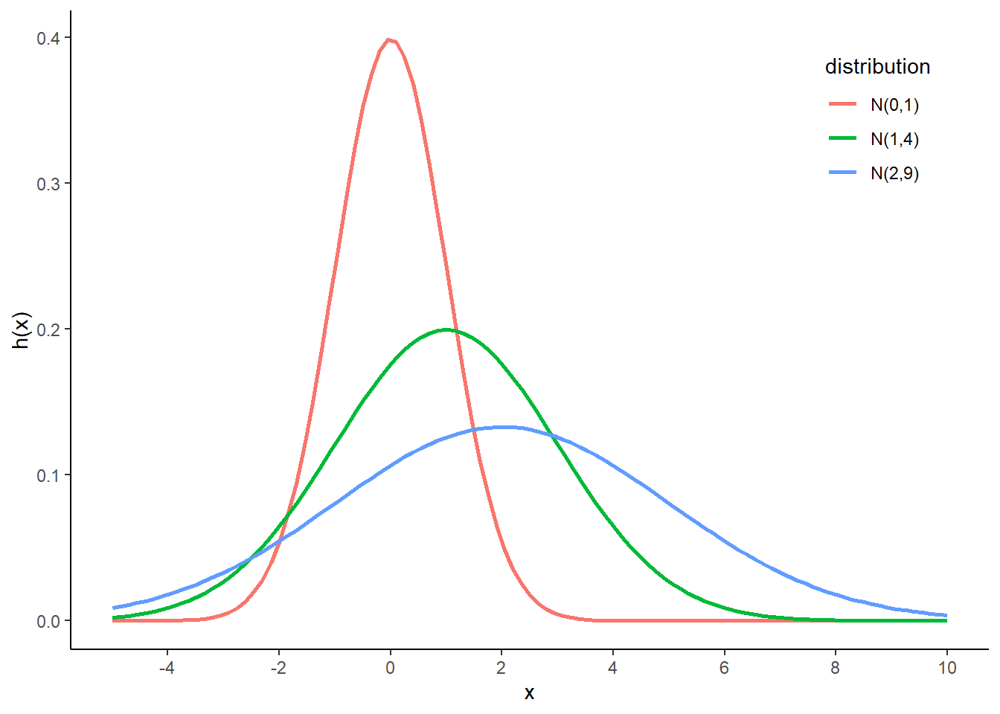
Figure 7.2
ggplot(data_frame(x = c(-4, 4)), aes(x = x)) +
stat_function(fun = dnorm, args = list(0, 1),
aes(colour = "N(0,1)"), size = 1) +
stat_function(fun = dt, args = list(1),
aes(colour = "t(1)"), size = 1) +
stat_function(fun = dt, args = list(3),
aes(colour = "t(3)"), size = 1) +
stat_function(fun = dt, args = list(5),
aes(colour = "t(5)"), size = 1) +
scale_x_continuous(name = "x",
breaks = seq(-4, 4, 1),
limits=c(-4, 4)) +
scale_y_continuous(name = "f(x)") +
labs(colour = "distribution") +
theme_classic() +
theme(
legend.position = c(0.95, 0.95),
legend.justification = c("right", "top"),
legend.box.just = "right",
legend.margin = margin(6, 6, 6, 6)
)## Warning: `mapping` is not used by stat_function()
## Warning: `mapping` is not used by stat_function()
## Warning: `mapping` is not used by stat_function()
## Warning: `mapping` is not used by stat_function()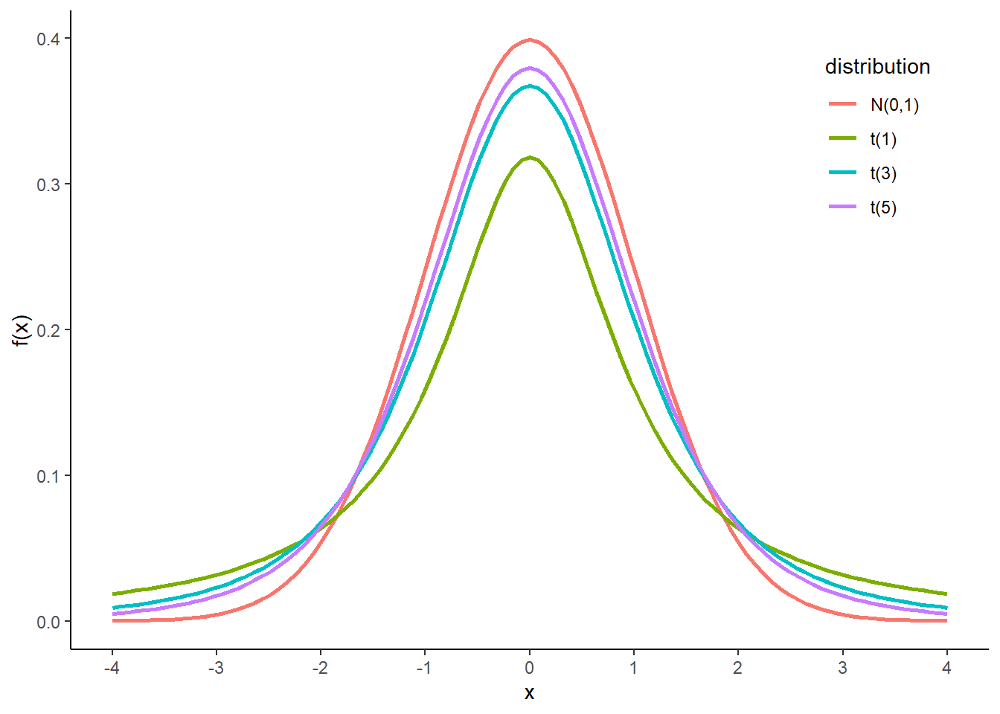
Figure 8.1
tibble(
x = seq(0,1,0.01),
L = sapply(seq(0,1,0.01), function(q) q^7*(1-q)^3)
) %>%
ggplot() +
geom_line(aes(x=x,y=L), size = 1) +
labs(x="p",y="L(p)") +
theme_classic()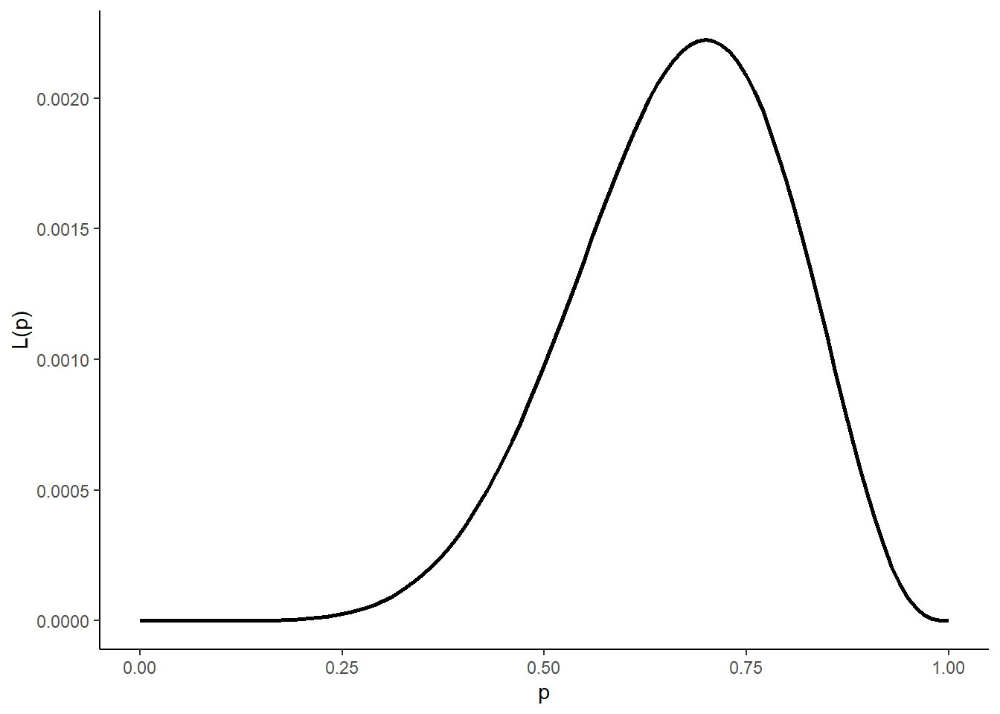
Figure 8.2
tibble(
x = seq(0,1,0.01),
L = sapply(seq(0,1,0.01), function(q) 7*log(q) + 3*log(1-q))
) %>%
ggplot() +
geom_line(aes(x=x,y=L), size = 1) +
labs(x="p",y="log L(p)") +
theme_classic()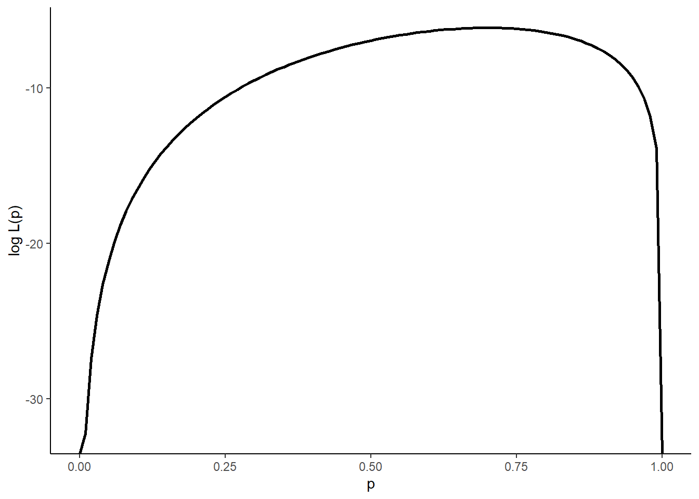
Figure 8.3
tibble(x = c(-3, 5)) %>%
ggplot(aes(x)) +
stat_function(fun = dnorm, args = list(0, 1),
aes(colour = "estimate A"), size = 1) +
stat_function(fun = dnorm, args = list(1.5, 1),
aes(colour = "estimate B"), size = 1) +
geom_hline(yintercept = 0) +
annotate("segment", x=0,xend=0,y=dnorm(0),yend=0, linetype="dashed") +
annotate("text", x=0, y=-0.02, parse=TRUE,
label=paste("theta")) +
labs(colour = "") +
theme_void() +
theme(
legend.position = c(0.95, 0.95),
legend.justification = c("right", "top"),
legend.box.just = "right",
legend.margin = margin(6, 6, 6, 6)
)## Warning: `mapping` is not used by stat_function()
## Warning: `mapping` is not used by stat_function()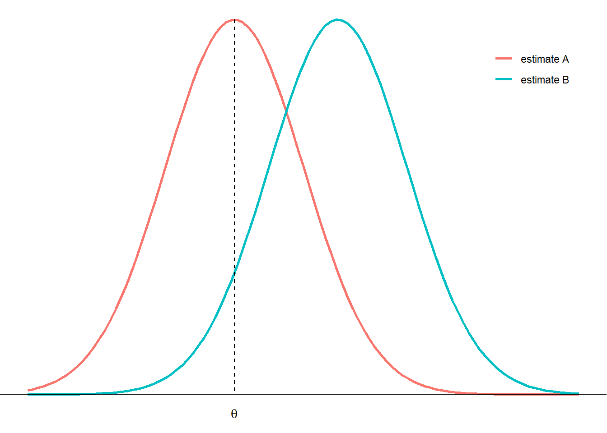
Figure 8.4
tibble(x = c(-3, 3)) %>%
ggplot(aes(x)) +
stat_function(fun = dnorm, args = list(0, 0.5),
aes(colour = "estimate A"), size = 1) +
stat_function(fun = dnorm, args = list(0, 1),
aes(colour = "estimate B"), size = 1) +
geom_hline(yintercept = 0) +
annotate("segment", x=0,xend=0,y=dnorm(0, 0, 0.5),
yend=0, linetype="dashed") +
annotate("text", x=0, y=-0.02, parse=TRUE,
label=paste("theta")) +
labs(colour = "") +
theme_void() +
theme(
legend.position = c(0.95, 0.95),
legend.justification = c("right", "top"),
legend.box.just = "right",
legend.margin = margin(6, 6, 6, 6)
)## Warning: `mapping` is not used by stat_function()
## Warning: `mapping` is not used by stat_function()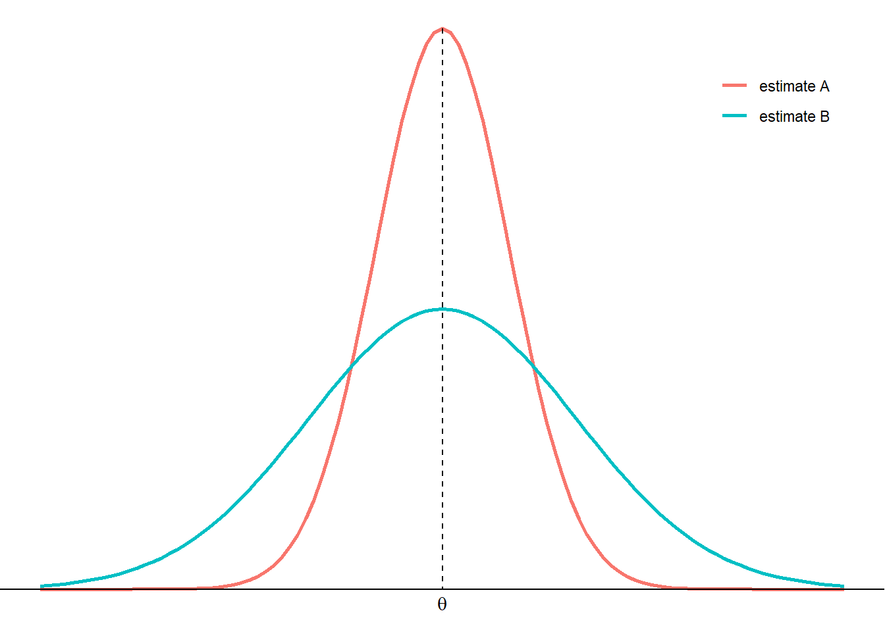
Figure 9.1
CItest<-function(m,s,n,r) {
rdata<-replicate(r,{
ex<-rnorm(n,m,s)
m<-mean(ex)
ci<-1.96*sd(ex)/sqrt(n)
c(m-ci,m,m+ci)
})
rdata<-data.frame(1:r,t(rdata))
colnames(rdata)<-c("trials","minci","mean","maxci")
sr<-sum(rdata$minci<m & rdata$maxci > m)/r
cat(paste("正答率: ",sr))
ggplot2::ggplot(data = rdata, aes(x = mean ,y = trials)) +
geom_point() +
geom_errorbarh(aes(xmin=minci, xmax=maxci)) +
geom_vline(xintercept = m, color="red") +
theme_classic()
}
CItest(160,20,10,100)## 正答率: 0.97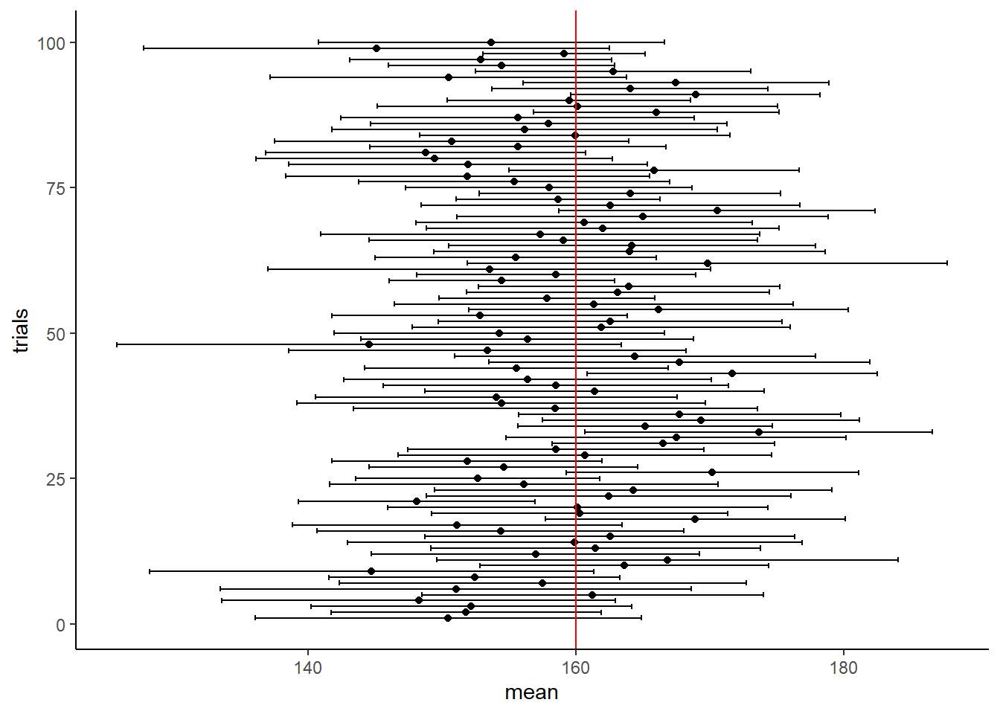
Figure 9.2
tibble(x = c(-3.5, 3.5)) %>%
ggplot(aes(x)) +
stat_function(fun = dnorm,
n = 1000,
args = list(mean = 0,sd = 1), size = 1) +
geom_area(stat = 'function',
fun = dnorm,
fill = 'grey50',
xlim = c(-3.5, -1.9),
alpha = 0.3) +
geom_area(stat = 'function',
fun = dnorm,
fill = 'grey50',
xlim = c(1.9, 3.5),
alpha = 0.3) +
geom_hline(yintercept = 0) +
scale_x_continuous(breaks = NULL) +
scale_y_continuous(breaks = NULL) +
annotate("segment", x=0,xend=0,y=dnorm(0, 0, 1), yend=0) +
annotate("segment", x=-1.9,xend=-1.9,y=dnorm(-1.9),yend=0) +
annotate("segment", x=1.9,xend=1.9,y=dnorm(1.9),yend=0) +
annotate("text", x=-1.9, y=-0.02, parse=TRUE,label=paste("-z[alpha/2]")) +
annotate("text", x=1.9, y=-0.02, parse=TRUE,label=paste("z[alpha/2]")) +
annotate("text", x=2.15, y=0.02, parse=TRUE,
label=paste("alpha/2")) +
annotate("text", x=-2.15, y=0.02, parse=TRUE,
label=paste("alpha/2")) +
theme_void()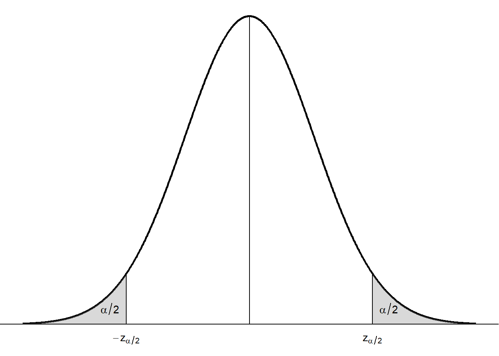
Figure 10.1
tibble(x = c(-3.5, 3.5)) %>%
ggplot(aes(x)) +
stat_function(fun = dnorm,
n = 1000,
args = list(mean = 0,sd = 1), size = 1) +
geom_area(stat = 'function',
fun = dnorm,
fill = 'grey50',
xlim = c(-3.5, -1.96),
alpha = 0.3) +
geom_area(stat = 'function',
fun = dnorm,
fill = 'grey50',
xlim = c(1.96, 3.5),
alpha = 0.3) +
geom_hline(yintercept = 0) +
scale_x_continuous(breaks = NULL) +
scale_y_continuous(breaks = NULL) +
annotate("segment", x=0,xend=0,y=dnorm(0, 0, 1), yend=0) +
annotate("segment", x=-1.96,xend=-1.96,y=dnorm(-1.96),yend=0) +
annotate("segment", x=1.96,xend=1.96,y=dnorm(1.96),yend=0) +
annotate("text", x=-1.96, y=-0.02, parse=TRUE,label=paste("-1.96")) +
annotate("text", x=1.96, y=-0.02, parse=TRUE,label=paste("1.96")) +
theme_void()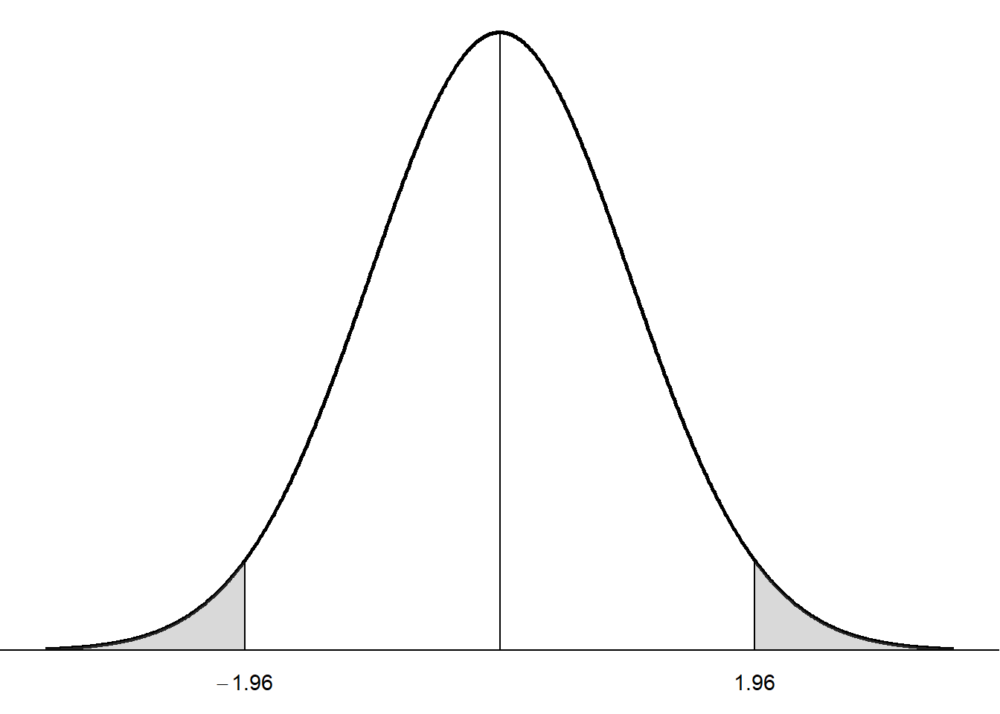
Figure 10.2
tibble(x = c(-3.5, 3.5)) %>%
ggplot(aes(x)) +
stat_function(fun = dnorm,
n = 1000,
args = list(mean = 0,sd = 1), size = 1) +
geom_area(stat = 'function',
fun = dnorm,
fill = 'grey50',
xlim = c(1.645, 3.5),
alpha = 0.3) +
geom_hline(yintercept = 0) +
scale_x_continuous(breaks = NULL) +
scale_y_continuous(breaks = NULL) +
annotate("segment", x=0,xend=0,y=dnorm(0, 0, 1), yend=0) +
annotate("segment", x=1.645,xend=1.645,y=dnorm(1.645),yend=0) +
annotate("text", x=1.645, y=-0.02, parse=TRUE,label=paste("1.645")) +
theme_void()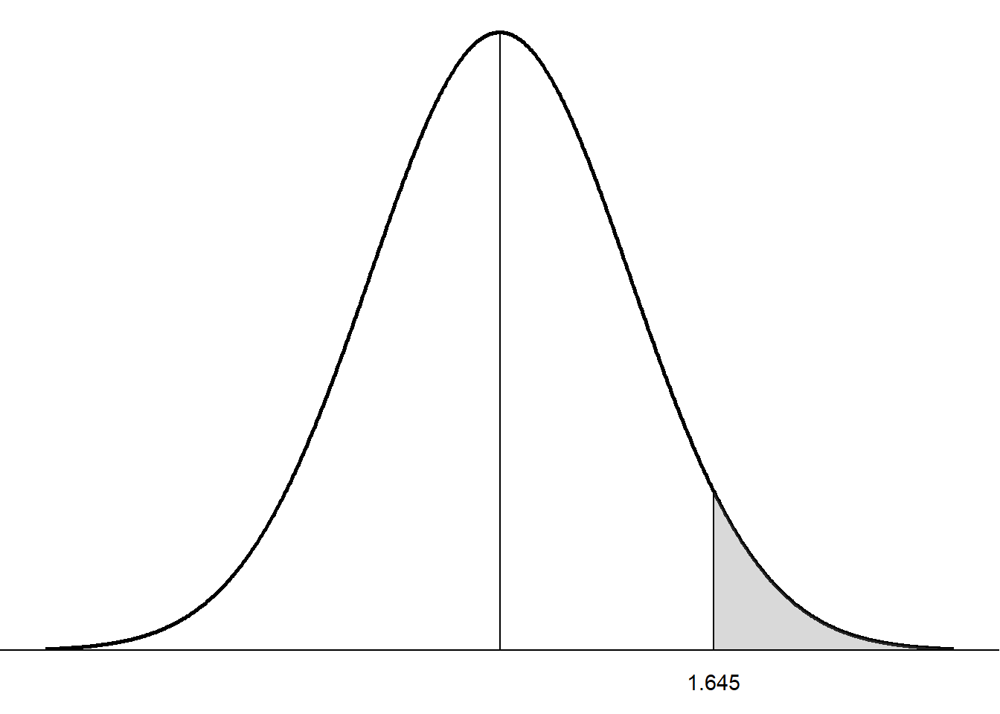
Figure 13.1
set.seed(8931)
dat <- tibble(x=runif(100, 0, 50),
y=rnorm(100, x + 10, 10))
dat %>%
ggplot(aes(x=x, y=y)) +
geom_point() +
geom_smooth(method="lm", fill=NA, lwd=1.5, fullrange=TRUE) +
theme_classic()## `geom_smooth()` using formula 'y ~ x'
##
## Call:
## lm(formula = y ~ x, data = dat)
##
## Residuals:
## Min 1Q Median 3Q Max
## -26.6956 -7.0253 -0.8862 6.0086 21.5698
##
## Coefficients:
## Estimate Std. Error t value Pr(>|t|)
## (Intercept) 9.86720 2.02106 4.882 4.08e-06 ***
## x 0.96227 0.06952 13.842 < 2e-16 ***
## ---
## Signif. codes: 0 '***' 0.001 '**' 0.01 '*' 0.05 '.' 0.1 ' ' 1
##
## Residual standard error: 10.48 on 98 degrees of freedom
## Multiple R-squared: 0.6616, Adjusted R-squared: 0.6582
## F-statistic: 191.6 on 1 and 98 DF, p-value: < 2.2e-16Figure 13.2
dat <- tibble(x=runif(200, 0, 50),
y=rnorm(200, x + 10, 10))
breaks <- c(10, 20, 30, 40, 50)
norm <- tibble()
for (t in breaks) {
br = seq(qnorm(0.005,t + 10,10),qnorm(0.995,t + 10,10),length=200)
tibble(x=t-dnorm(br,t + 10,10)*100,
y=br,
b=t) %>%
bind_rows(norm,.) -> norm
}
dat %>%
ggplot(aes(x=x, y=y)) +
geom_point() +
geom_path(data=norm, aes(x, y, group=b), lwd=1.0, color = "red") +
geom_vline(xintercept=breaks, lty=2) +
geom_abline(intercept = 10, slope = 1)+
theme_classic()